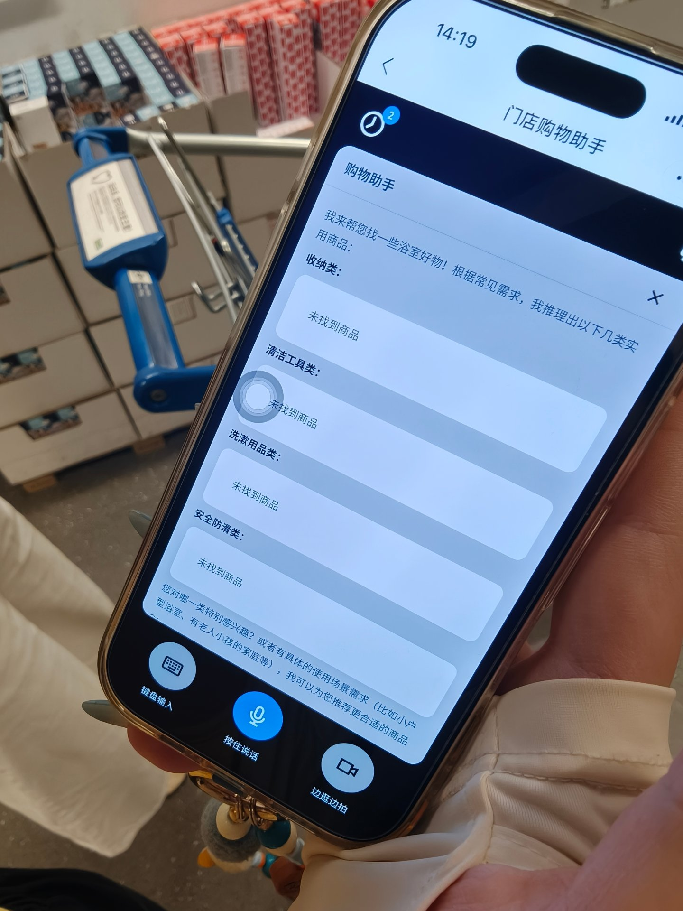

Meeting Workbench
让会议从“录下来”变成可追踪的工作证据。
将录音、转写、摘要、问题追问与项目归档集中到一个工作台， 让会议结论能够回到项目上下文，而不是散落在聊天和文件夹里。
Recording states
Project archive
Evidence capture
AI Product · Enterprise UX · Workflow Design
我是 Mira，一名关注 AI 产品与企业级工具的 UX 设计师。我的工作不止于界面： 我会追问数据语义、状态边界、AI 何时介入，以及方案怎样真正被工程承接。
Selected Work
从 AIGC 内容 Pipeline、真实门店用户研究，到高信息密度的企业内容工具。 每个案例只保留最能证明判断过程的证据。


将灯具场景生成、人工审核与交互展示串联为可复用流程， 从 8 款体验 Demo 推进到 16 款稳定交付。


从 4 组真实门店测试中识别生活语言与商品 taxonomy 的落差， 将错误 case 转化为可执行的交互方向。
围绕检索筛选、AI Search、Future Price 与 Operation Log， 在多个小需求中持续处理字段语义、批量操作、异常状态和审计闭环。
Practice
这些不是独立的大型业务项目，而是我为解决信息丢失、会议复盘与 AI 协作边界而形成的实践。
Meeting Workbench
将录音、转写、摘要、问题追问与项目归档集中到一个工作台， 让会议结论能够回到项目上下文，而不是散落在聊天和文件夹里。
Agent Workloop
用项目上下文、Evidence Log、Skill 和人工审核组织 AI 协作： Agent 负责查找、整理与执行，我保留问题定义、判断、异常处理和发布闸门。
How I Work
我的默认工作方式，是先确认真实能力和证据，再定义状态与边界，最后才进入设计和实现。
真实页面、会议原话、数据和代码优先于模型记忆。
先拆字段、角色、状态和系统依赖，再决定界面。
用可运行原型验证交互、能力边界与实现成本。
模型不确定时，让人能够理解、修改、确认和撤销。
将失败与判断沉淀为规则、Skill 和下一轮检查项。
About
关注不确定性、解释性、用户控制和 AI 退出机制。
处理高信息密度、复杂字段、批量操作和审计追溯。
把一次性设计判断转化为可执行、可审核、可复用的流程。
在产品、设计、开发、内容团队与 AI 工具之间翻译问题。